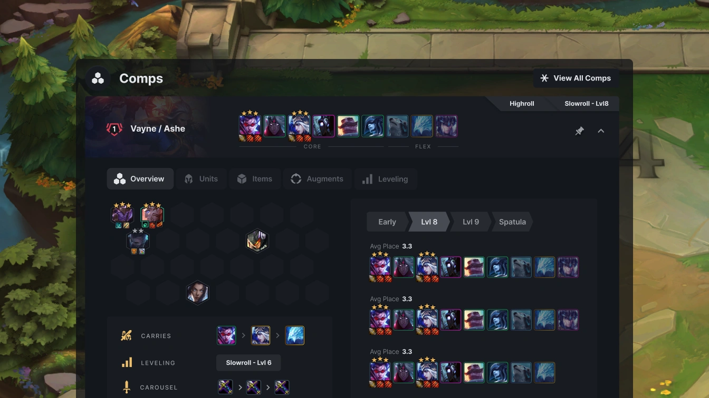
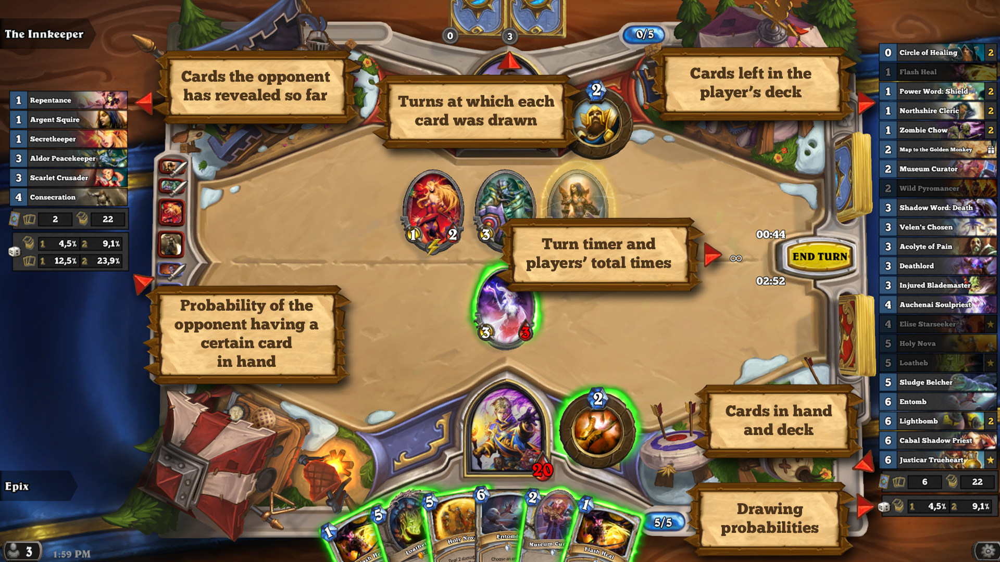
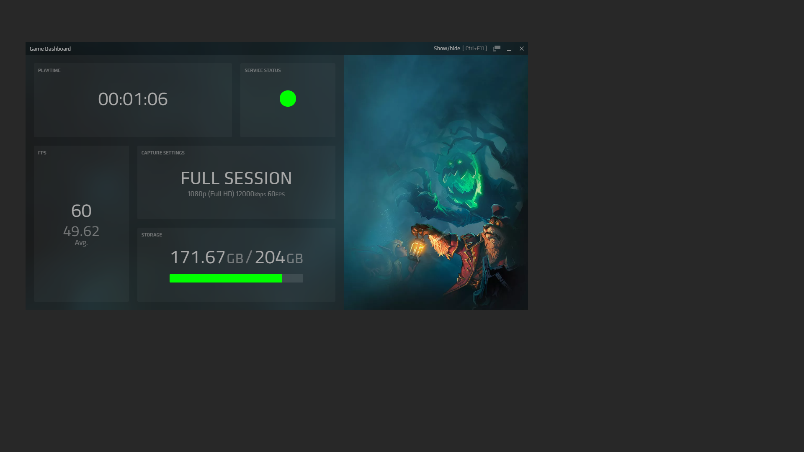
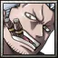
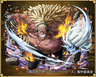

Blitz · 조합을 먼저 보여주기
완성 구성의 유닛 아이콘이 위에 있고, 배치·아이템·성장 정보는 아래에서 구분됩니다.
채택: 불릿 재료 3전설을 항상 한 줄로.
제외: 큰 구성 창 전체를 게임 위에 상시 노출.
공식 화면 보기 ↗긴 설명을 예쁘게 포장하는 대신, 플레이 중 필요한 정보와 따로 봐도 되는 정보를 나눴습니다. 같은 불릿 상황을 세 가지 구조로 비교해 보세요.
시안 전용 가상 데이터입니다. 현재 게임의 실제 추천·통계가 아니며, 기존 앱은 변경하지 않았습니다.
공식 공개 화면 4장 · 3개 제품

완성 구성의 유닛 아이콘이 위에 있고, 배치·아이템·성장 정보는 아래에서 구분됩니다.
채택: 불릿 재료 3전설을 항상 한 줄로.
제외: 큰 구성 창 전체를 게임 위에 상시 노출.
공식 화면 보기 ↗

보조 대시보드는 상태 정보를 구획별로 보여줍니다. 공식 문서는 기록의 이벤트 북마크도 설명합니다.
채택: 조합·위습 기록은 별도 타임라인.
제외: 영상 녹화·큰 장식 이미지는 불필요.
공식 사용 안내 ↗예시: 40라 · 스토리 13 완료 · 스모커 준비 중 · 브룩 추가 2개 중 1개 완료
작은 창 하나로, 다음 행동만.
조작에 집중하기 좋습니다. 다만 “왜 이 재료를 만드는가”는 계획 창을 열어야 알 수 있습니다.
지금 재료가 어디로 가는지 한눈에.


스모커 미완성처럼 중요한 누락이 드러납니다. 대신 화면을 더 차지하며 조합이 길면 상세 경로를 접어야 합니다.
작은 실행 카드 + 넓은 계획·기록 창.
기록·시간은 시안용 예시입니다.
작은 화면에서는 실행만, 여유가 있을 때 계획·복기를 확인합니다. 단일 모니터에서는 별도 창 전환이 필요합니다.
랜디픽의 문제는 단순히 색이나 둥근 모서리가 아닙니다. 긴 안내와 설정이 “지금 해야 할 조작”과 같은 공간을 차지하고, 준비·완료·대기가 비슷해 보이는 점을 먼저 바꿔야 합니다.
| 비교 | A 집중형 | B 경로형 | C 분리형 |
|---|---|---|---|
| 게임 가림 | 작음 | 큼 | 가장 작게 조정 가능 |
| 전체 조합 이해 | 별도 확인 | 즉시 확인 | 계획 창에서 확인 |
| 조합 수량 확인 | 크게 표시 | 크게 표시 | 크게 표시 |
| 복기·자동 집계 설명 | 별도 화면 필요 | 별도 화면 필요 | 처음부터 분리 설계 |
공식 공개 이미지의 배치와 문서 내용을 비교했습니다. 각 제품을 설치해 실제 게임에서 조작한 평가는 아닙니다. HDT 이미지는 공식 저장소의 구형 예시입니다. Mobalytics는 접근 차단, MetaTFT는 정적 페이지에서 실제 화면을 확보하지 못해 시각 근거에서 제외했습니다.
Blitz의 최적 조합 정보나 타 제품의 통계 정확성을 랜디픽의 성능으로 주장하지 않습니다. B의 연결선은 상세 레시피가 아니라 목표 관계입니다. 이 보드의 40라 상황은 세 안 비교용으로 구성한 예시이며, 실사용 실패 기록 분석과는 별개입니다.
공간 배치 보조 참고: StyleGallery supporting-pane. 참고 이미지는 각 서비스 소유이며, 이 로컬 비교 보드에서만 출처와 함께 사용합니다.